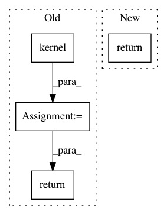

0e84313d49f4b3f5aef0e0d558ecc34e271b2ad5,grakel/graph_kernels.py,GraphKernel,fit_transform,#GraphKernel#Any#,519
Before Change
return np.dot(self.kernel(self.X_graph),
self.nystroem_normalization_.T)
else:
km = self.kernel()
if self.normalize:
km_diag = np.diagonal(km)
km_diag = km_diag.reshape(km_diag.shape[0], 1)
km /= np.sqrt(np.dot(km_diag.T, km_diag))
return km
def calculate_kernel_matrix(
self,
kernel,
After Change
return np.dot(self._kernel.transform(X),
self.nystroem_normalization_.T)
else:
return self._kernel.fit_transform(X)
In pattern: SUPERPATTERN
Frequency: 3
Non-data size: 4
Instances
Project Name: ysig/GraKeL
Commit Name: 0e84313d49f4b3f5aef0e0d558ecc34e271b2ad5
Time: 2018-01-24
Author: y.siglidis@gmail.com
File Name: grakel/graph_kernels.py
Class Name: GraphKernel
Method Name: fit_transform
Project Name: bashtage/linearmodels
Commit Name: 25aec3291e63d54ad3f71b9ba95f9d5b9132793f
Time: 2017-11-30
Author: kevin.k.sheppard@gmail.com
File Name: linearmodels/asset_pricing/covariance.py
Class Name: KernelWeight
Method Name: w
Project Name: ysig/GraKeL
Commit Name: 0e84313d49f4b3f5aef0e0d558ecc34e271b2ad5
Time: 2018-01-24
Author: y.siglidis@gmail.com
File Name: grakel/graph_kernels.py
Class Name: GraphKernel
Method Name: transform